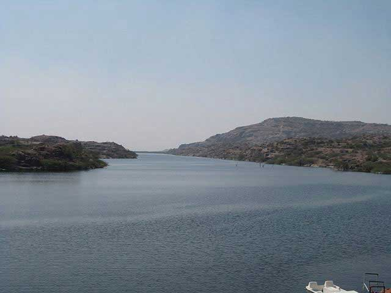
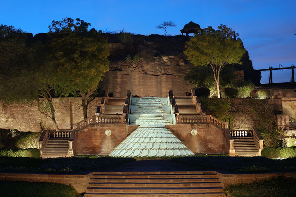

| VISITING PLACES |
| Name |
Origin |
Photo |
| UMAID BHAWAN
| JODHPUR (RAJASTHAN)
|  |
| The palace is situated on the highest point in the city. The 347-roomed massive palace is named one of the largest private residences in the world. The palace boasts of a combination of Indian and European style of architecture. A part of the palace still serves as a residence to the former royal family, while other two parts of the palace are converted into Taj Palace Hotel and museum. |
since 1943 |
Place 1 |
| MEHRANGARH FORT
| JODHPUR (RAJASTHAN)
|  |
| Beyond question, Mehrangarh Fort tops the list of ‘must visit’ places in Jodhpur. It is one among the largest Indian forts. This invincible fort stands magnificently 400 feet above the city. Rao Jodha constructed the fort . |
A.D 1500 |
Place 2 |
| KAILANA LAKE
| JODHPUR (RAJASTHAN)
|  |
| Kailana Lake is located on west of the city. This is yet another artificial lake This is one amongst the most frequented lakes in Rajasthan. It is a birdwatchers’ paradise. You could sail on a boat if you aim to add some breathtaking photographs to your collection. The view of sunset would be stunning. |
Since 1872 |
Place 3 |
| MANDORE GARDEN
| JODHPUR (RAJASTHAN)
|  |
| Mandore, belonging to the 6th century, was Marwar’s capital before Jodhpur was established. Mandore Gardens here attract tourists in great numbers. The Mandore Gardens also house a government museum, a ‘Hall of Heroes’ and a temple to 33 crore Gods. |
Since 6th century |
Place 4 |
| CLOCK TOWER
| JODHPUR (RAJASTHAN)
|  |
| Clock Tower is a famous landmark in the Old City. It was constructed by Maharaja Sardar Singh during his tenure between 1880 and 1911. The clock tower offers a good view of the fort. Sardar Market is adjacent to Clock Tower where a wide range of products is sold. |
Since 1911 |
Place 5 |
| RAO JODHA NATIONAL PARK
| JODHPUR (RAJASTHAN)
|  |
| The aim behind the formation of Rao Jodha Desert Rock Park was to restore the rocky area near the fort. Once preliminary steps were taken to restore the land, more than 80 native plant species from the famous Thar Desert were grown. The 200 acres of park is located at the foot of the impregnable Mehrangarh Fort. |
Since 2006 |
Place 6 |
| BALSAMAND LAKE
| JODHPUR (RAJASTHAN)
|  |
| Balsamand Lake is an artificial lake that was constructed by Balak Rao Parihar .The lush greenery around the lake has mango groves, papaya groves and groves of guava, plum and pomegranate. Balsamand Lake Palace was intended to serve as summer resort for the royal family of Jodhpur. |
Since 1159 A.D |
Place 7 |